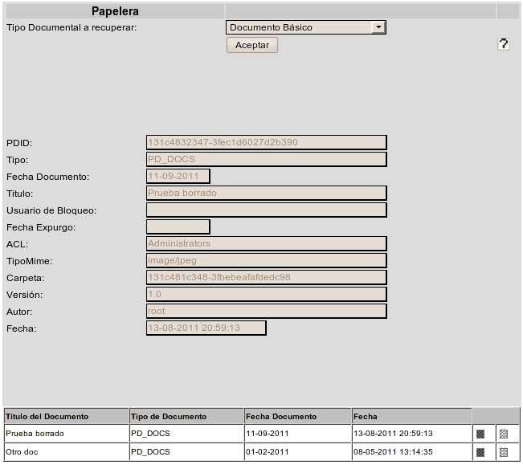

Al seleccionar la opción de menú Otras Tareas - Papelera, aparecerá un formulario que permite filtar por el tipo de documento que se desea recuperar. Eligiendo el tipo de documento y aceptando aparecerá la lista de todos los documentos del tipo elegido que están aún en la papelera. Para los documentos borrados aplican los mismos criterios de seguridad que para los vigentes. Si no se disponía de permisos para ver un documento, no será posible verlo o localizarlo tampoco en la papelera.
Seleccionando cualquiera de los documentos de la lista, se podrá ver en la parte superior los valores asignados a los metadatos del documento. Pulsando sobre el título, puede verse el archivo asociado a ese documento.
La tabla de resultados muestra los datos:

Junto a cada documento se dispone de dos imágenes, una que permite vaciar la papelera, recuperando ese documento y otra que permite eliminarlo definitivamente del sistema. Los documento se recuperan en la carpeta donde estabann en el momento de borrarse. Si esa carpeta no existiera, se recuperan en la carpeta del usuario actual.
En la versión de cliente Swing, esa tabla de resultados puede ordenarse seleccionando la cabecera de cada columna. Puede también cambiarse el tamaño de cada columna arrastrando la línea separadora de las cabeceras
Ver: Borrado Documentos